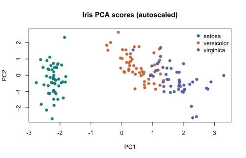
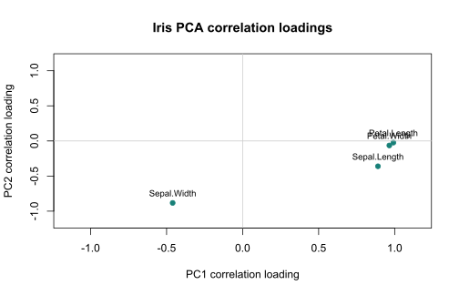

PCA
Autoscaled principal components, scores, eigenvalues, explained variance, and loading hypothesis tests.
Multivariate Statistical Analysis for AI Agents
Bring the loadings R package into your research workflow. Explore sample structure, inspect variable loadings, and return statistical evidence directly to your AI assistant.
Designed for researchers in metabolomics, bioinformatics, and multivariate statistics.
01 / FEATURES
Autoscaled principal components, scores, eigenvalues, explained variance, and loading hypothesis tests.
Orthogonal smoothed PCA with a user-supplied differential matrix and smoothing parameter.
Partial least squares with rank order of groups. Define group order through one-hot columns and a differential matrix.
Group-guided latent components and statistical tests of variable loadings.
Regularized canonical correlation discriminant analysis with explicit regularization.
Official loadings tests accompany each method. Unadjusted p-values support exploratory interpretation.
Scores and loadings are available for every method. Eigenvalues and variance ratios are reported only for PCA. Discriminant analysis here does not provide prediction, cross-validation, or a validated classifier.
02 / AVAILABLE TOOLS
| Tool | Inputs | Returns |
|---|---|---|
demo_data | No parameters | Iris numeric rows, one-hot groups and variable names |
analyze_pca | x, components (2), max_rows (100) | Scores, coefficients, correlation loadings, p-values, eigenvalues and variance ratios |
analyze_model | method, x, y, d, components (2), kappa (0.999), lambda (0.5), max_rows (100) | Scores, coefficients, loadings, p-values and method conditions |
All analyses return a versioned JSON object with ok, conditions, and warnings. Matrices include row arrays, original dimensions, returned dimensions, and truncation flags. Failures return a structured error.
Rows = samples; columns = variables. Limits: 500 samples, 200 variables, 50,000 cells per matrix; up to 10 returned components. Missing and infinite values or constant variables are rejected. See complete API specification.
03 / GETTING STARTED
The hosted service has not been deployed. Run the server locally or deploy your own instance using the repository instructions. No public connection URL is available yet.
Start the local HTTP server, then register it:
claude mcp add --transport http loadings-mcp http://localhost:8080/mcpFor a deployed service, replace the loopback address with its verified HTTPS endpoint. Use /mcp to check connectivity. Official guide ↗
Use a custom remote connector with your deployed HTTPS endpoint via Claude’s connector management interface. Availability and creation permissions depend on your account and workspace. Official connector guide ↗
Where your account allows custom MCP servers, open Plugins, choose Add custom MCP server, and enter your reachable HTTPS endpoint. Review discovered tools and authentication. Workspace policies apply. Official setup and availability ↗
Transport: Streamable HTTP at /mcp. The server does not implement OAuth. Cloud Run IAM credentials and connector authentication must be compatible; private Cloud Run services are not automatically accessible to hosted assistants. No public access is enabled by this project.
04 / EXAMPLES
These plots are generated by the actual PCA tool using the 150-sample Iris dataset. Each variable is centered and scaled to unit variance. Plots show PC1 and PC2; correlation loadings differ from rotation coefficients.


“Get the demo data, run PCA with two components, and explain the strongest loadings. Distinguish exploratory p-values from validated findings.”
05 / DOCUMENTATION
06 / REFERENCES
07 / ABOUT
Developer: Hiroyuki Yamamoto
loadings MCP wraps the existing R package without modifying it. R and mcptools handle analysis and MCP transport. This independent open-source project is not affiliated with OpenAI, Anthropic, or Posit.
Explore the source ↗